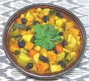

|
Pumpkin Stew with VegetablesMorocco - Marak dar marhzin | ||||
| Serves: Effort: Sched: DoAhead: |
6 *** 1-1/4 hrs Yes |
The "pumpkin" here is not your Halloween pumpkin, which is not very good eating. I use the very fine Kabocha squash. In Morocco this will often be served with CousCous, but is also fine with Rice. | |||
|
----- 9 1 1 4 6 1 2 ----- 1 1 1 2/3 1/3 ----- 1 1/3 1/2 ----- 3 3 ----- ----- |
--- oz # # oz oz # cl --- t t t t t --- t c T --- T c --- --- |
-- Vegetables Chickpeas (1) Kabocha Squash (2) Sweet Potatoes (3) Carrots Turnips, small Onions Garlic -- Spices Turmeric Ginger, ground Cinnamon, ground Salt Pepper -- Flavorings Harissa Raisins Honey (4) ------------- Olive Oil, pure Water -- Garnish Cilantro leaves -- Serve With Lime Wedges Couscous or rice |
PREP - (45 minutes)
|